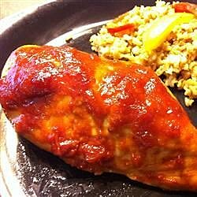

Michael's Chicken

Ingredients
- ¾ cup cider vinegar
- ¼ cup chili sauce
- ¼ cup Worcestershire sauce
- 1 (6 ounce) can tomato paste
- ½ cup diced onion
- 2 tablespoons brown sugar
- ½ teaspoon cayenne pepper
- 2 tablespoons vegetable oil
- 8 chicken thighs
Directions
- Step 1
Preheat oven to 350 degrees F (175 degrees C).
-
Step 2
In a medium saucepan over medium heat, blend cider vinegar, chili sauce, Worcestershire
sauce, and tomato paste. Mix in the onion, brown sugar, and cayenne pepper.
-
Step 3
Heat oil in a medium skillet over medium heat, and saute the chicken thighs until
browned. Remove from heat, drain, and arrange in a medium baking dish. Cover with the
cider vinegar sauce mixture.
-
Step 4
Bake covered 45 minutes in the preheated oven, or until chicken is no longer pink and
juices run clear.